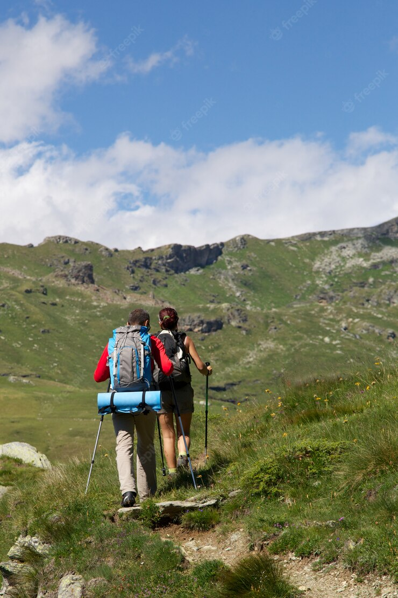

What to Wear Hiking
What to Wear Hiking (the Quick-and-Dirty List):

- No denim jeans or “I love to hike” cotton tees: Cotton holds onto water, so it keeps you feeling sweaty in hot temps and chills you if things turn cold and wet.
- Polyester, nylon or merino wool undies (and everything else): These materials move sweat off skin and dry fast, so they’re ideal for next-to-skin layers such as briefs, tees, sports bras or long underwear, and for socks. That moisture management ability means those materials work well for all the rest of your clothing as well.
- Comfortable yet sturdy pants: Trails have twists and turns, so you need to move freely. Branches and boulders, though, can shred thin, stretchy tights or yoga pants.
- A warm jacket: Polyester fleece works great for this, though a puffy jacket (with a polyester fill or water-resistant down inside), is smart for colder conditions.
- A rain jacket: “Waterproof/breathable” is the key phrase, meaning it will block rain and wind, but will also let you sweat without feeling like you’re wearing a plastic bag. In seriously soggy weather, pack rain pants, too.
- A brimmed hat: Keeps your head dry and protected from the sun. The brim helps keep rain and sun out of your eyes. (Bring some sunglasses, too.)
- Sturdy shoes: You don’t have to have leather boots, but your hiking footwear should provide support, protection from rocks and roots, and traction on wet and dry surfaces.